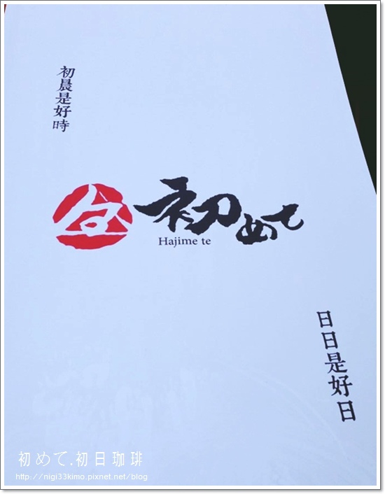

<thml>
<head>
<title>5</title>
</head>
<body>

<hl>【高雄】初日咖啡~初めて 日式早午餐.和食.手作甘味.珈琲</hl>

店門口前的白布簾上寫著「初晨是好時。日日是好日。」<br>
我想店家想表達的是，料理生活，從早餐開始。<p>

讓這些美食記憶變成客人生活的一部分，日日都有好心情，日日是好日。<br>
「初日咖啡」的理想，的確正在實現。<p>
<hr>



<p>

<a href="index.html">首頁</a>
<a href="2nd.html">第2頁</a>
<a href="3nd.html">第3頁</a>
<a href="4nd.html">第4頁</a>


</body>
</thml>